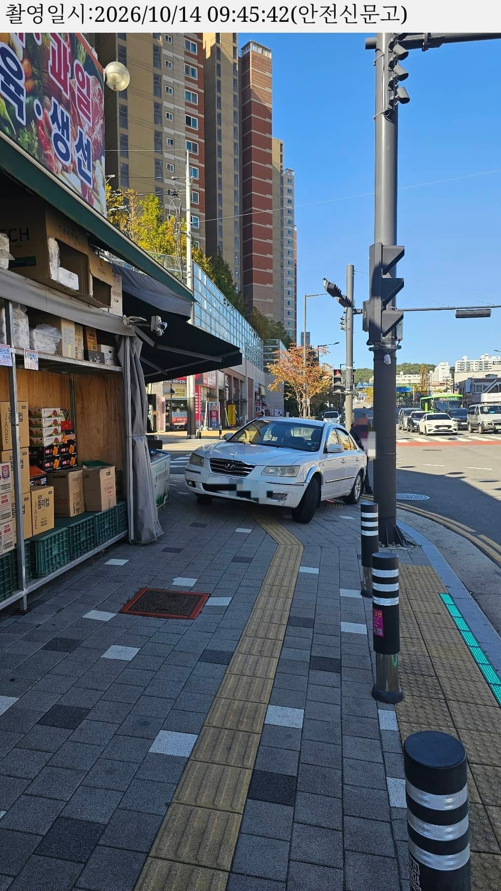

건너편에서 횡단보도 신호 기다리는데
좌회전하더니 저기로 쓱 올라가서 주차하고 마트 들어가더라
얼탱없어서 신고했는데 방금 처리해줌 ㅅㅅ

건너편에서 횡단보도 신호 기다리는데
좌회전하더니 저기로 쓱 올라가서 주차하고 마트 들어가더라
얼탱없어서 신고했는데 방금 처리해줌 ㅅㅅ
아름다운세상에 한표
저런차는 뿌셔도 처벌안받게해줘야됨
오류겐 오류겐

인도에 쳐올릴거면 사람 지나갈 틈이라도 만들지 대각으로 박는건 대체 뭐임...
사람지나가는거 생각할정도라면 예초에 인도에 안세우지 ㅋㅋㅋㅋ
아 예?
예초에는 뭔 단어임 ㅋㅋㅋㅋㅋㅋㅋㅋㅋㅋㅋㅋ
군인일때 예초병이었나보다
버스타고 가는데 어떤차가 우회전 하는 길가에 차 세우더니 조수석에 탄 여자가 내려서 올리브영에 들어감
버스 우회전해야하는데 차때매 못가니까 클락션 계속 울림
운전석에 탄 남자는 무반응
운전면허 뺏어야 하는 놈들 너무 많음
ㄹㅇ 애미터짐
이렇게 멀리서 찍어야 수용해주는구나
나는 좀 가까이서 찍었다고 불수용때려버림
버스정류장 불법주정차도 정류장 같이 나오게 좀 멀리 찍어야되더라
전반적인 배경이랑 차 전체가 나오는게 좋고
1분뒤에 찍는 사진도 첫번째랑 최대한 같은 구도로 찍어야 불수용 잘 안뜨고
찍을때 번호판이 살짝이라도 흔들리면 다시 찍는게 좋음
(휴대폰에서는 잘 보여도 고지서에 첨부해야하는 공무원 입장에서는 이의제기 들어올 수도 있어서 최대한 선명한사진 줘야함)
난 2장찍으라길래 친절하게 앞뒤 찍어줬는데
아 같은 구도로 찍으라는거는 1분간 저차가 움직이지 않고 정차해 있었다만 증명되면 괜찮
앞뒤로 찍어도 그게 확실하다고 판단됐을꺼임
ㅇㅎ 결국 가까이서 찍은게 문제였나
급똥도 아니고..
딱 저 사진찍을때 장본거 들고 나오더라고
나랑 눈마주쳤는데 ㅋㅋㅋㅋ 잘가고

어 여기 봉명동이잖아 우리집 뒤네 착한 개부이
진짜 저건 뭐하는 새끼냐 ㅋㅋㅋㅋㅋㅋㅋㅋㅋ
뭔ㅋㅋㅋㅋㅋㅋㅋ
인간 언저리
정차도 정상인처럼 해야 시벌 봐주기라도 하지
이런 어플 신고하는거
1분 간격으로 두장 촬영해야 벌금 먹인다 이런 얘기 들은거 같은데
그냥 한장으로도 되나보네?>??
ㄴㄴ 2장 찍음
저게 2번째 사진
유 캔트 팤 데얼!
인도위 주차는 시간 간격 필요없음 ?
1분간격 2장 똑같아
천안 기준으로
전국 기준 동일
아하.. 시간 투자 개붕이 개추
우리집 앞에 소화전 있는데 ㅋㅋㅋ 거기에 비상등 켜두고 잠깐 주차하는척 2~3시간 대고 있는 새끼들 신고할때마다 기분 좋음
ㅅㅂㅋㅋㅋㅋㅋ 비상등초식
차 꼬라지만 봐도 제정신아님
이새낀 진짜 그냥 ‘길‘ 한 상태잖아 ㅋㅋㅋ
나도 인도주차 두 번정도 신고했는데 몇 시간뒤에 '담당자 현장확인결과 해당차량 없음' 이렇게 뜨더라. 몇 시간정도 주차해놔야 인정해주나?
응?? 뭔가 이상하게 신고된거같은데
ㅋㅋㅋㅋㅋㅋㅋㅋㅋㅋㅋㅋㅋㅋㅋㅋㅋㅋㅋㅋㅋㅋ